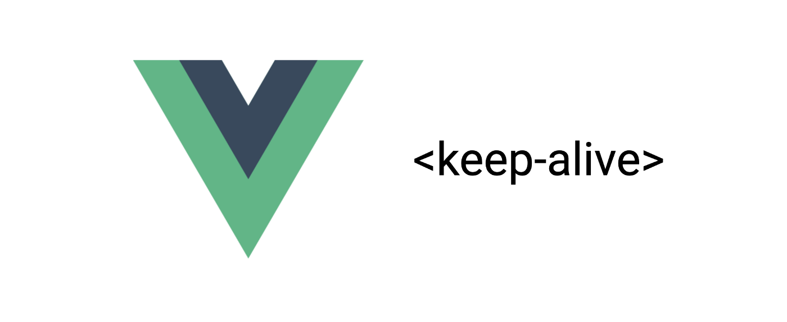

# [Vue] 聰明使用 keep-alive 達到 Cache 目的
# keep-alive 是 Vue 的原生元件，專門做為 Cache 的解決方案，避免頁面中的組件重新被渲染。

keep-alive 是 Vue 的原生元件，專門做為 Cache 的解決方案，避免頁面中的組件重新被渲染。
# 基礎用法
<keep-alive>
<component></component>
</keep-alive>
# props
- include —
以逗號作為分隔的字串、Regx、或是Array - exclude —
以逗號作為分隔的字串、Regx、或是Array
查找首先檢查 component 自身的 name ，如果無 name ，則查找它的局部註冊名稱 (parent components 的 key value)。
anonymous component 不能被查找。
<!-- 以逗號作為分隔 -->
<keep-alive include="a,b">
<component :is="view"></component>
</keep-alive>
<!-- 以 Regx 作為查找規則 -->
<keep-alive :include="/a|b/">
<component :is="view"></component>
</keep-alive>
- max — 最多可以 Cache 多少 component。一旦這個達到這個數字，在新 Instance 被創建之前，已被 Cache 的 component 中最久没有被使用的 Instance 會被銷毀掉。
<keep-alive :max=”10">
<component :is=”view”></component>
</keep-alive>
要注意的是， <keep-alive> 不會在 functional component 中正常運作，因為他們沒有 Instance。
# Work with router
實務上，我們會使用 <keep-alive> 將 <router-view> 包起來，使得頁面跳轉時可以 Cache 住前一個畫面。
<keep-alive>
<router-view>
<!-- 所有match 到的 components 都可以被 Cache -->
</router-view>
</keep-alive>
# 使用 keep-alive 動態 router — 在 router 中使用 meta 屬性控管
方法一、使用 v-if 分辨哪個組件要被 keep-alive
// routes 配置
export default [
{
path: '/',
name: 'home',
component: Home,
meta: {
keepAlive: true // 需要被缓存
}
}, {
path: '/:id',
name: 'edit',
component: Edit,
meta: {
keepAlive: false // 不需要被缓存
}
}
]
<keep-alive>
<router-view v-if="$route.meta.keepAlive">
<!-- Cache View -->
</router-view>
</keep-alive>
情境一
假設有 3 個路由： A, B, C
- 需求
- Default A
- B → A, A 不刷新
- C → A, A 要刷新
解決方法
- 在 Route 中對 A 設置
keepAlive = true
{
path: '/',
name: 'A',
component: A,
meta: {
keepAlive: true // need to be cache
}
}
- 在 B 組件要離開時，將 A 的
keepAlive設為true，使其可以被 Cache
export default {
data() {
...
},
methods: {
...
},
beforeRouteLeave(to, from, next) {
// setting next meta.keepAlive to true
to.meta.keepAlive = true;
next();
}
};
- 在 C 組件要離開時，將 A 的
keepAlive設為 false，使其可以被 Cache
export default {
data() {
....
},
methods: {
....
},
beforeRouteLeave(to, from, next) {
// setting next meta keepAlive to false.
// so that make A no cached.
to.meta.keepAlive = false;
next();
}
};
- 優點 — 簡單實作，程式碼單純好理解
- 缺點 — 每個 router 需要控制
# 方法二、使用 vuex 儲存需要被 Cache 的 Component Name ，並且在 keep-alive 中使用 include 比對 Component 是否要被 Cache
store.js
export default {
state: {
cachedViews: []
},
mutations: {
ADD_CACHED_VIEW: (state, view) => {
if (state.cachedViews.includes(view.name)) return;
if (!view.meta.keepAlive) {
state.cachedViews.push(view.name);
}
},
},
actions: {
addCachedView({ commit }, view) {
commit('ADD_CACHED_VIEW', view);
},
addView({ dispatch }, view) {
dispatch('addCachedView', view);
},
}
}
之後在 main.vue 或是 template.vue 中使用 watch $route 監聽 route 變動，決定 route 後的 page 是否加入 Cache 中。
main.vue
export default {
...
watch: {
$route() {
this.$store.dispatch('addView', this.$route);
}
}
}
- 優點 — 每個頁面的 cache 皆依據 router 決定，程式碼乾淨整齊。
- 缺點 — 實作時較為繁鎖。
# 總結
Vue 的 keep-alive 幫我們實現了 Web 的 Cache 功能，使得使用者輕鬆達到 Cache 的目的。
我們不再需要從最底層的 Web Cache 方法開始刻起，大大地增加開發效率。
但是如何靈活地使用 keep-alive 又是另一個需要研究的學習點。
# 參考
徹底揭密 keep-alive 原理 — 掘金
- 多級路由嵌套 keep-alive 失效
- Vue 中 keep-alive 的深入理解和使用
- vue-router 之 keep-alive